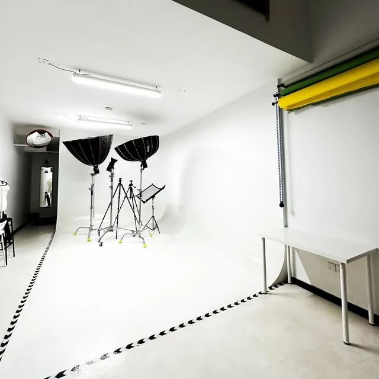

استئجار مساحة التصوير
ابدأ من الفكرة: تصوير منتجات أو بورتريه أو محتوى لعلامتك. حدّد مدة الاستخدام واسأل عن تجهيزات المساحة المتاحة.
الخبر
مساحة تصوير إبداعية في الخبر. شاهد المكان، استلهم من الجلسات المنشورة، وجهّز تفاصيل يوم التصوير.

الخدمات والتفاصيل
شيخ ستوديو مساحة إبداعية للتصوير في الخبر. يجمع المعرض بين صور المكان ولقطات منشورة في حساب الاستوديو لتساعدك على تصور جلسة التصوير المناسبة لعلامتك أو مشروعك.
ابدأ من الفكرة: تصوير منتجات أو بورتريه أو محتوى لعلامتك. حدّد مدة الاستخدام واسأل عن تجهيزات المساحة المتاحة.
تعرّف على مساحة السيكلوراما البيضاء الظاهرة في صور الاستوديو، وناقش متطلبات الإضاءة والخلفيات قبل الزيارة.
شارك نوع المحتوى وعدد أفراد الفريق والمعدات التي ستحضرها، ليؤكد الاستوديو متطلبات استخدام المكان.
المعرض
نماذج مختارة من صور النشاط المنشورة. اختر التصنيف وافتح الصورة لمشاهدة التفاصيل.
7 صور في المعرض
بداية أوضح
جهّز هذه المعلومات لتبدأ المحادثة مع الفريق بصورة واضحة عن احتياجك.
قبل التواصل
شارك قائمة احتياجاتك مع الاستوديو لتأكيد المعدات المتاحة وما يشمله سعر الاستئجار.
اذكر نوع التصوير والتاريخ والمدة وحجم الفريق، وأرفق مرجعًا بصريًا عند بدء المحادثة.
اختر الخدمة وأضف التفاصيل التي تساعد الفريق على فهم طلبك. ستظهر لك رسالة جاهزة للمراجعة قبل فتح واتساب.